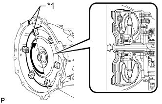
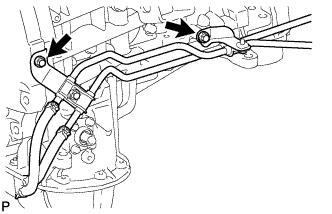
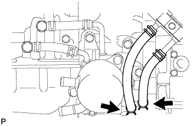

АВТОМАТИЧЕСКАЯ ТРАНСМИССИЯ В СБОРЕ (для моделей с 1GR-FE) > УСТАНОВКА |
| 1. УСТАНОВИТЕ МУФТУ ГИДРОТРАНСФОРМАТОРА В СБОРЕ |
С помощью штангенциркуля и поверочной линейки измерьте расстояние "A" между сопрягаемой с трансмиссией поверхностью двигателя*1 и сопрягаемой с гидротрансформатором поверхностью ведущего диска*2 (шаг 1).
Совместите метки на картере трансмиссии и муфте гидротрансформатора, а затем введите в зацепление шлицы первичного вала и ротора турбины.
| *1 | Метка |
 |
Поворачивая муфту гидротрансформатора, введите в зацепление шлицы вала статора и статора.
| *1 | Метка |
|  |
Поверните муфту гидротрансформатора и совместите метки на муфте гидротрансформатора и картере трансмиссии, чтобы вставить шпонку ведущей шестерни масляного насоса в паз на муфте гидротрансформатора.
| *1 | Метка |
С помощью штангенциркуля и поверочной линейки измерьте расстояние B, показанное на рисунке, и убедитесь, что оно больше расстояния A, измеренного на первом шаге.
| 2. УСТАНОВИТЕ КРОНШТЕЙН ТРОСА МЕХАНИЗМА ПЕРЕКЛЮЧЕНИЯ ПЕРЕДАЧ № 1 |
Установите кронштейн троса механизма переключения передач № 1 на трансмиссию в сборе и закрепите 2 болтами.
| 3. УСТАНОВИТЕ РАЗДАТОЧНУЮ КОРОБКУ В СБОРЕ |
Установите раздаточную коробку (Нажмите здесь).
| 4. УСТАНОВИТЕ АВТОМАТИЧЕСКУЮ ТРАНСМИССИЮ В СБОРЕ |
Нанесите консистентную смазку для шлицевого соединения сцепления на поверхность коленчатого вала, вступающую в контакт с сердцевиной муфты гидротрансформатора.
| *1 | Сердцевина муфты гидротрансформатора |
| *2 | Коленчатый вал |
Перед установкой трансмиссии удостоверьтесь, что на поверхности блока цилиндров, вступающей в контакт с трансмиссией, закреплены 2 штифта.
Установите трансмиссию и закрепите ее 9 болтами.
| 5. ПОДСОЕДИНИТЕ ШЛАНГ САПУНА |
Подсоедините 3 шланга пробки сапуна к двигателю.
| 6. ПОДСОЕДИНИТЕ ЖГУТ ПРОВОДОВ И РАЗЪЕМ |
Подсоедините разъем датчика положения паркинга/нейтрали, разъем жгута электропроводки трансмиссии, 2 разъема датчиков частоты вращения и боковой разъем системы управления раздаточной коробкой.
Закрепите 2 зажима разъемов и 7 зажимов жгутов проводов.
Наклоните автоматическую трансмиссию.
Подсоедините провод соединения с массой и закрепите его гайкой.
| 7. УСТАНОВИТЕ ЗАДНЮЮ ПОДУШКУ ОПОРЫ ДВИГАТЕЛЯ № 1 |
Установите подушку задней опоры двигателя на трансмиссию и закрепите ее 4 болтами.
Установите теплозащитный экран задней опоры двигателя на подушку опоры двигателя и закрепите болтом.
| 8. УСТАНОВИТЕ ПОПЕРЕЧИНУ РАМЫ № 3 В СБОРЕ |
Установите поперечину рамы на подушку задней опоры двигателя и закрепите ее 4 болтами.
Установите поперечину рамы и закрепите ее 4 болтами и 4 гайками.
| 9. УСТАНОВИТЕ ПРАВЫЙ И ЛЕВЫЙ КРОНШТЕЙНЫ ЭЛЕМЕНТА ПЕРЕДНЕЙ ПОДВЕСКИ |
Установите правый и левый кронштейны элемента передней подвески, закрепив их 8 болтами.
| 10. УСТАНОВИТЕ УСТАНОВОЧНЫЙ БОЛТ МУФТЫ ГИДРОТРАНСФОРМАТОРА И ВЕДУЩЕГО ДИСКА |
 |
Проверните коленчатый вал, чтобы обеспечить доступ к местам установки 6 установочных болтов муфты гидротрансформатора, и, удерживая ключом болт шкива коленчатого вала, вверните каждый болт.
Установите боковую крышку картера маховика.
| 11. УСТАНОВИТЕ СТАРТЕР В СБОРЕ |
Установите стартер (Нажмите здесь).
| 12. ПОДСОЕДИНИТЕ ВПУСКНОЙ ПАТРУБОК МАСЛЯНОГО РАДИАТОРА № 1 И ВЫПУСКНОЙ ПАТРУБОК МАСЛЯНОГО РАДИАТОРА № 1 (для моделей без масляного радиатора трансмиссии с воздушным охлаждением) |
|  |
Установите 2 патрубка масляного радиатора и закрепите их 2 болтами.
| 13. УСТАНОВИТЕ МАСЛЯНЫЙ РАДИАТОР ТРАНСМИССИИ В СБОРЕ (для моделей без воздушного масляного радиатора трансмиссии) |
 |
Подсоедините 2 шланга к штуцерам патрубков масляного радиатора.
Установите масляный радиатор трансмиссии и предварительно закрепите его болтом A. Вверните болты B и C, затянув их с номинальным моментом затяжки. Затем затяните болт A с номинальным моментом затяжки.
|  |
Подсоедините впускной шланг масляного радиатора № 2 и выпускной шланг масляного радиатора № 2 к термостату трансмиссионной жидкости.
Подсоедините 2 перепускных шланга охлаждающей жидкости и установите перепускной патрубок охлаждающей жидкости на автоматическую трансмиссию, закрепив его 2 болтами.
| *1 | Метка, нанесенная белой краской |
| *2 | Метка, нанесенная желтой краской |
| 14. ПОДСОЕДИНИТЕ ВПУСКНОЙ ПАТРУБОК МАСЛЯНОГО РАДИАТОРА № 1 И ВЫПУСКНОЙ ПАТРУБОК МАСЛЯНОГО РАДИАТОРА № 1 (для моделей с масляным радиатором трансмиссии с воздушным охлаждением) |
Подсоедините концы впускного и выпускного патрубков масляного радиатора к соответствующим штуцерам патрубков масляного радиатора, предварительно закрепив их вручную.
Сомкните 2 зажима гибких шлангов № 2 и вверните 2 болта.
С помощью разрезной головки закрепите впускной и выпускной патрубки.
| 15. ПОДСОЕДИНИТЕ ТРОС МЕХАНИЗМА ПЕРЕКЛЮЧЕНИЯ ПЕРЕДАЧ В СБОРЕ |
Подсоедините трос механизма переключения передач к кронштейну троса механизма переключения передач, используя новый фиксатор, а затем подсоедините конец троса к рычагу приводного вала с помощью гайки.
| 16. УСТАНОВИТЕ ОПОРУ КОЛЛЕКТОРА |
Установите опору и закрепите ее 3 болтами.
| 17. УСТАНОВИТЕ ОПОРУ КОЛЛЕКТОРА № 2 |
Установите опору и закрепите ее 3 болтами.
| 18. УСТАНОВИТЕ ПРИЕМНУЮ ТРУБУ В СБОРЕ |
Установите приемную трубу (Нажмите здесь).
| 19. УСТАНОВИТЕ КАРДАННЫЙ ВАЛ В СБОРЕ |
Установите карданный вал (Нажмите здесь).
| 20. УСТАНОВИТЕ ПЕРЕДНИЙ КАРДАННЫЙ ВАЛ В СБОРЕ |
Установите передний карданный вал (Нажмите здесь).
| 21. УСТАНОВИТЕ НИЖНИЙ ЗАЩИТНЫЙ КОЖУХ КАРТЕРА РАЗДАТОЧНОЙ КОРОБКИ |
Установите нижний защитный кожух картера раздаточной коробки и закрепите его 4 болтами.
| 22. ПОДСОЕДИНИТЕ ПРОВОД К ОТРИЦАТЕЛЬНОМУ ВЫВОДУ АККУМУЛЯТОРНОЙ БАТАРЕИ |
| 23. ДОБАВЬТЕ ОХЛАЖДАЮЩУЮ ЖИДКОСТЬ ДВИГАТЕЛЯ |
Затяните 2 пробки сливных кранов блока цилиндров.
Затяните пробку сливного крана радиатора вручную.
Долейте охлаждающую жидкость.
| Параметр / Устройство | Заданные условия | |
| Для моделей с автоматической трансмиссией | Для моделей без заднего подогревателя | 10,5 литра (11,1 кварты США, 9,2 английской кварты) |
| Для моделей с задним подогревателем | 12,3 литра (13,0 кварты США, 10,8 английской кварты) | |
| Для моделей с подогревателем | 12,8 литра (13,5 кварты США, 11,2 английской кварты) | |
| для моделей с механической трансмиссией | Для моделей без заднего подогревателя | 10,7 литра (11,3 кварты США, 9,4 английской кварты) |
| Для моделей с задним подогревателем | 12,5 литра (13,2 кварты США, 11,0 английской кварты) | |
Медленно налейте охлаждающую жидкость в расширительный бачок радиатора до отметки "F".
Установите пробку расширительного бачка.
Установите на место пробку радиатора.*1
Запустите двигатель и сразу же остановите его.*2
Подождите примерно 10 с. Затем снимите пробку радиатора и проверьте уровень охлаждающей жидкости. Если уровень охлаждающей жидкости снизился, добавьте охлаждающую жидкость.*3
Повторяйте шаги *1, *2 и *3 до тех пор, пока уровень охлаждающей жидкости не снизится.
Установите на место пробку радиатора.*4
Настройте систему кондиционирования, как описано ниже.*5
| Параметр / Устройство | Условие |
| Скорость вентилятора | Любая настройка, кроме OFF (ВЫКЛ) |
| Температура | В сторону "WARM" |
| Переключатель системы кондиционирования | Выкл |
Запустите двигатель, прогрейте его настолько, чтобы открылся термостат, а затем дайте поработать в таком состоянии несколько минут, чтобы прокачать охлаждающую жидкость.*6
Остановите двигатель и подождите, пока охлаждающая жидкость не охладиться до температуры окружающего воздуха. Затем снимите пробку радиатора и проверьте уровень охлаждающей жидкости.*7
Если уровень охлаждающей жидкости снизился, добавьте охлаждающую жидкость и прогрейте двигатель до открывания термостата.*8
Если уровень охлаждающей жидкости не снизился, убедитесь, что уровень жидкости в расширительном бачке радиаторе находится на линии F.
Если уровень охлаждающей жидкости ниже линии F, повторите шаги с *4 по *8.
Если уровень охлаждающей жидкости выше линии F, слейте охлаждающую жидкость до линии F.
| 24. ДОБАВЬТЕ ЖИДКОСТЬ ДЛЯ АВТОМАТИЧЕСКОЙ ТРАНСМИССИИ |
Добавьте жидкость для автоматической трансмиссии (Нажмите здесь).
| 25. ПРОВЕРЬТЕ, НЕТ ЛИ УТЕЧЕК ОХЛАЖДАЮЩЕЙ ЖИДКОСТИ |
Заполните радиатор охлаждающей жидкостью, а затем подсоедините приспособление для опрессовки системы охлаждения и проверки пробки радиатора.
Прогрейте двигатель.
С помощью приспособления для опрессовки системы охлаждения и проверки пробки радиатора увеличьте давление в радиаторе до 123 кПа (1,3 кгс/см2, 18 фунтов на кв. дюйм) и убедитесь, что давление не падает.
Если давление снижается, проверьте на наличие утечек шланги, радиатор и насос системы охлаждения. Если нет следов или признаков утечки внешней охлаждающей жидкости, проверьте сердцевину отопителя, блок цилиндров и головку блока цилиндров.
| 26. ПРОВЕРЬТЕ ПОЛОЖЕНИЕ РЫЧАГА ПЕРЕКЛЮЧЕНИЯ ПЕРЕДАЧ |
Переведя рычаг переключения передач из положения P в положение R при включенном зажигании (IG) и нажатой педали тормоза, убедитесь в том, что рычаг перемещается плавно и фиксируется в требуемом положении.
Удостоверьтесь, что рычаг переключения передач не останавливается при перемещении из положения R в положение P, и не заедает при перемещении из положения D в положение S.
Запустите двигатель и убедитесь, что автомобиль начинает двигаться вперед после перемещения рычага переключения передач из положения N в положение D и назад после установки рычага в положение R.
Если результат проверки не удовлетворяет требованиям, проверьте датчик положения паркинга/нейтрали в сборе и монтаж напольного механизма переключения передач в сборе.
| 27. ОТРЕГУЛИРУЙТЕ ПОЛОЖЕНИЕ РЫЧАГА ПЕРЕКЛЮЧЕНИЯ ПЕРЕДАЧ |
Снимите задний вещевой ящик в облицовке туннеля пола (Нажмите здесь).
Для моделей с холодильной камерой:
Снимите вещевой ящик в облицовке туннеля пола (Нажмите здесь).
Установите рычаг переключения передач в положение N.
 |
Сдвиньте ползун в направлении, показанном на рисунке, и вытяните фиксатор.
| *1 | Ползун |
| *2 | Фиксатор |
 |
Вдавите фиксатор в регулировочный блок, чтобы зафиксировать его.
Установите задний вещевой ящик в облицовке туннеля пола (Нажмите здесь).
Для моделей с холодильной камерой:
Установите вещевой ящик в облицовке туннеля пола (Нажмите здесь).
| 28. ПРОВЕРЬТЕ, НЕТ ЛИ УТЕЧЕК ОТРАБОТАВШИХ ГАЗОВ |
| 29. УСТАНОВИТЕ УПЛОТНЕНИЕ № 1 МЕЖДУ ФАРТУКОМ ПРАВОГО ПЕРЕДНЕГО КРЫЛА И РАМОЙ |
Закрепите уплотнение между фартуком переднего крыла и рамой № 1 5 фиксаторами.
| 30. УСТАНОВИТЕ УПЛОТНЕНИЕ ФАРТУКА ПРАВОГО ПЕРЕДНЕГО КРЫЛА |
Закрепите уплотнение фартука переднего крыла 5 фиксаторами.
| 31. УСТАНОВИТЕ ЗАДНЮЮ ЗАЩИТУ КАРТЕРА ДВИГАТЕЛЯ В СБОРЕ |
Установите заднюю защиту картера двигателя и закрепите ее 4 болтами.
| 32. УСТАНОВИТЕ ЗАЩИТУ КАРТЕРА ДВИГАТЕЛЯ № 1 В СБОРЕ |
 |
Присоедините защиту картера двигателя к кузову автомобиля, как показано на рисунке.
Вверните 4 болта.
| 33. ВЫПОЛНИТЕ СБРОС ПАМЯТИ |
Выполните операцию сброса памяти (инициализацию электронной системы автоматической трансмиссии) (Нажмите здесь).